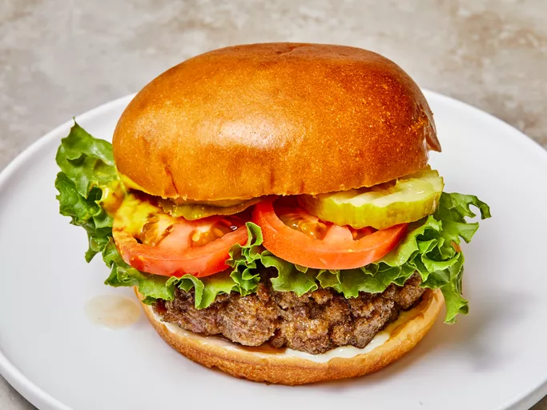

Hamburger

Juiciest Hamburgers Ever
No more dry, lackluster hamburgers. These are juicy, and spices can be easily
added or changed to suit anyone's taste. If you find the meat mixture too mushy,
just add more bread crumbs until it forms patties that hold their shape.
Ingredients:
- 2 pounds ground beef
- 1 egg, beaten
- ¾ cup dry bread crumbs
- 3 tablespoons evaporated milk
- 2 tablespoons Worcestershire sauce
- ⅛ teaspoon cayenne pepper
- 2 cloves garlic, minced
Steps:
- Gather all ingredients. Preheat a grill for high heat.
- Mix the ground beef, egg, bread crumbs, evaporated milk, Worcestershire sauce, cayenne pepper,
and garlic in a large bowl using your hands.
- Form the mixture into 8 hamburger patties.
- Lightly oil the grill grate. Grill patties until browned and no longer pink,
about 5 minutes per side. Serve hot and enjoy!
HOME